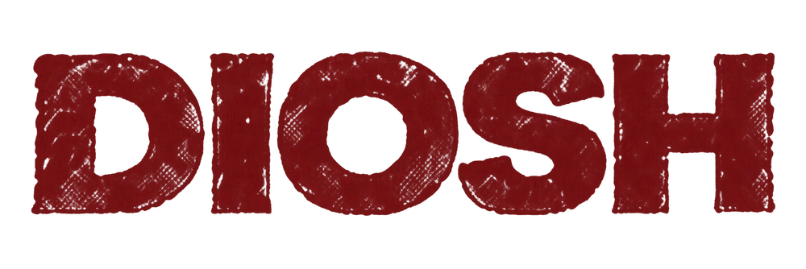

A estrada termina.
A sua jornada começa.
Reacenda dois abrigos. Enfrente nove guardiões.
Escolha sua arma e chegue ao último sino.
Ataque depois da preparação do inimigo.
Segure a defesa para bloquear. Aperte perto do golpe para dar parry. Esquive para sair da linha.
WASD · mouse esquerdo ataque · direito defesa
Espaço esquiva · Q avanço automático
Heroína da Brasa · proposta visual
Comparar com visual anterior
Trocar o visual retoma o último abrigo.
V7.1 · versão para revisão